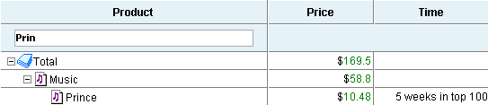
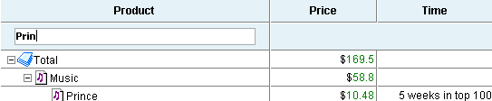
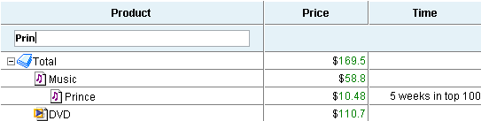

Filtering in TreeGrid
While filtering in a plain grid is pretty obvious and doesn't have space for variations, filtering in TreeGrid can be applied in many different ways.
Filtering by Level
Filtering in TreeGrid affects only the last level of hierarchy (leaf items) by default. This mode can be enabled with the help of the method setFiltrationLevel:
treegrid.setFilrationLevel(-1);
For example:

The dataset presented on the picture above will be filtered like this:

The branches in which the item is not found will be fully hidden:

The values that are not on the last level were ignored.
The level of filtration can be changed again in the following way:
treegrid.setFiltrationLevel(1); // upmost level has the index 0
After this command, the filtering uses the data from different levels of hierarchy and the filtering will show the following results:


In the second case, the user can see the items situated below the found one.
It is possible to force TreeGrid to filter data on all the levels of hierarchy at the same time in the following way:
treegrid.setFiltrationLevel(-2);


In such a mode filtering shows only the items that match the filtering criteria, while the lower level items are not shown.
"Top Level Show" Mode
This mode can be enabled like this:
treegrid.setFiltrationLevel(-1,true);
In such a mode, the upper level items without children and matching the filtering criteria are still shown, the items situated on the filtration level and below are hidden.

In the second picture both Music and DVD haven't matched the filtering criteria because filtering runs only for the last level items but they are still shown.
Related sample: Search and Filtering in TreeGrid
Back to top